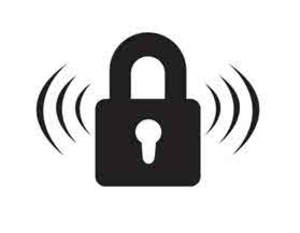

Trade Mark Journal No.2025/016 18 April 2025
UK00004152392 24 January 2025 (6,9,20,37,42,45)

- Class 6
- Anti-theft security devices of, or principally of, metal; anti-theft security devices for use with containers and bottles of, or principally of, metal; devices of, or principally of, metal to restrict access to closures of containers or bottles; anti-theft devices made principally of metal; security locking devices made principally of metal; release devices for security purposes, for security purposes, in relation to the closures of containers or bottles, made principally of metal; access restricting devices, for security purposes, in relation to the closures of containers or bottles, made principally of metal; bottle closures of metal; metallic locks; locks, for security purposes in relation to the closures of containers or bottles, made principally of metal; locks made principally of metal; metallic locks for use with containers and bottles; locking mechanisms made principally of metal; mechanical locks made principally of metal; locking devices made principally of metal; metallic security tags for bottles; security tags for bottles made principally of metal; theft prevention devices made principally of metal; bottle lids made principally of metal; bottle caps made principally of metal; container lids made principally of metal, jar and cup lids made principally of metal; boxes for storage, made principally of metal; storage box lids, made principally of metal.
- Class 9
- Anti-theft security devices and access restricting devices for use with containers and bottles and having magnetically or electrically operated release mechanisms; release devices for the aforesaid anti-theft security devices; security tags for bottles; security locking devices; electric and electronic locks; electric theft prevention devices and installations; intrusion and theft detectors; electronic safer cases; security apparatus for attaching, detaching, activating and deactivating security tags; security cameras; security control apparatus; electronic locks, for security purposes, in relation to the closures of containers or bottles; electronic locks; electric locks; smart locks; electromagnetic locks; wireless locks; digital locks; electronic locking apparatus; wireless locking mechanisms; electronic lock assemblies; electronic locks of metal; biometric locks; electronic locking systems; wireless lock assemblies; electronic mechanical locks of metal; radio-frequency controlled locks; electronic mechanical dialling locks; electronic safety locking devices; electronic combination locks of metal; card operated electronic locks; electronic locks with alarms; electronic releasable locking devices; electronic combination locks, not of metal; electronic mechanical locks, not of metal; apparatus for recording, transmission or reproduction of images; cash registers; data processing equipment; monitoring apparatus, electric; teaching apparatus and instruments; optical apparatus and instruments; point of sale apparatus; point of sale terminals; electronic displays; electronic advertising displays; electronic displays for use in retail outlets; interactive electronic displays; computer software; application software; application software for mobile phones; application software for wireless devices; computer software for inventory management and inventory control; tracking software; communication software; computer software platforms; databases; firmware; scanners; radio-frequency identification scanners and readers; image scanners; electronic radio-frequency identification readers for inventory and for electronic tag encoding; tracking and location apparatus; communications equipment; near-field communication devices; wireless communication devices; network communication apparatus; computer networking and data communications equipment; smart display screens which read electronic tags and electronic labels attached to garments and display the complete look of the garments as worn and other product information about the garments; smart scanners that read electronic tags and labels to display product information in retail outlets; electronic payment terminals; photographic apparatus; interactive photographic mirrors that take stills of a customer trying on garments which then play back the still images to the customer with a time delay; safety, security, protection and signalling devices; electronic surveillance apparatus; surveillance cameras; cameras; network surveillance apparatus; video surveillance cameras; electronic surveillance cameras for counting customer footfall, for tracking customers in retail outlets and for monitoring customer dwell time in retail outlets; access control devices; radio-frequency identification security pedestals and radio-frequency identification security antennas to detect electronic tags or labels; overhead radio-frequency identification security pedestals and security antennas; electronic security and surveillance devices; electronic security tags and labels, acoustic tags, magnetic tags; electronic tags for goods; theft alarms; radio frequency identification tags; radio frequency identification tag readers; radio frequency identification credentials, namely, cards and tags, and readers for radio frequency identification credentials; computer hardware and software systems for electronic security and surveillance devices; security control apparatus.
- Class 20
- Locks, not of metal; non-metallic anti-theft security devices for use with containers and bottles; non-metallic devices to restrict access to closures of containers or bottles; release devices for security purposes, in relation to the closures of containers or bottles; access restricting devices, for security purposes, in relation to the closures of containers or bottles; bottles made principally of metal; drinking bottles made principally of metal; water bottles made principally of metal; sports water bottles made principally of metal; containers made principally of metal; jars and cups made principally of metal; bottles, not of metal; drinking bottles, not of metal; water bottles, not of metal; sports water bottles, not of metal; bottle lids, not of metal; bottle caps, not of metal; water bottle lids, not of metal; household containers, not of metal; household container lids, not of metal; boxes for storage, not of metal; storage box lids, not of metal; jars and cups, not of metal; jar and cup lids, not of metal.
- Class 37
- Installation services relating to security systems; maintenance services; installation of electronic theft prevention devices; maintenance and repair of electronic theft prevention devices; information services relating to the installation of electronic theft prevention devices; information services relating to the maintenance of electronic theft prevention devices; installation of non-electronic theft prevention devices; maintenance and repair of non-electronic theft prevention devices; information services relating to the installation of non-electronic theft prevention devices; information services relating to the maintenance of non-electronic theft prevention devices; installation of radio frequency identification tag readers; maintenance and repair of radio frequency identification tag readers; information services relating to the installation of radio frequency identification tag readers; information services relating to the maintenance of radio frequency identification tag readers; installation of image scanning apparatus; maintenance and repair of image scanning apparatus; information services relating to the installation of image scanning apparatus; information services relating to the maintenance of image scanning apparatus; installation of tracking and location apparatus; maintenance and repair of tracking and location apparatus; information services relating to the installation of tracking and location apparatus; information services relating to the maintenance of tracking and location apparatus; installation of surveillance apparatus; maintenance and repair of surveillance apparatus; information services relating to the installation of surveillance apparatus; information services relating to the maintenance of surveillance apparatus; installation of security systems; maintenance and repair of security systems; information services relating to installation of security systems; information services relating to maintenance of security systems; installation of commercial security apparatus; installation of security and safety equipment; advisory services relating to the installation of security and safety equipment; installation of commerical security apparatus; maintenance and repair of commercial security installations; installation, maintenance and servicing of security cameras and alarms.
- Class 42
- Scientific and technological services and research and design relating thereto; design and development of theft prevention devices; design and development of theft prevention devices to restrict access to closures of bottles or containers; design and development of locking devices to restrict access to closures of bottles or containers; design and development of electronic locking devices; design and development of electronic locking devices with alarms; design and development of software relating to anti-theft devices; design and development of software relating to electronic locks; design and development of software relating to electronic locks with alarms; design and development of software relating to surveillance and security devices; design and development of software relating to surveillance and security services; industrial analysis and research services; design and development of computer hardware and software; design and development of software for inventory management; providing temporary use of on-line non-downloadable software for inventory management; hosting services and rental of software; Software as a Service [SaaS]; Platform as a Service [PaaS]; hosting of platforms on the Internet; IT consultancy, advisory and information services; IT security, protection and restoration; cloud computing services; cloud based inventory management services; rental of software for inventory management; engineering services; design services.
- Class 45
- Security services; security consultancy; security monitoring services; surveillance services; rental of security surveillance equipment; forensic analysis of surveillance video for fraud and theft prevention purposes; advisory, consultancy and information services in the fields of retail security and retail electronic article surveillance to prevent theft and loss of retail goods; crime prevention advisory services; monitoring of security and surveillance systems; security marking of goods; store detective services; stolen goods location and recovery services; advisory, consultancy and information services in the field of retail security and theft prevention of retail goods; software licensing services.
Algreta Solutions Limited
Representative: Trade Mark Wizards Limited